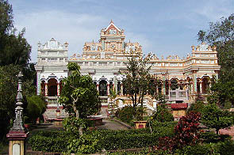
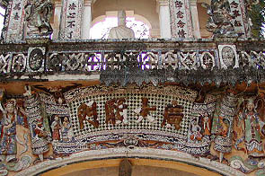
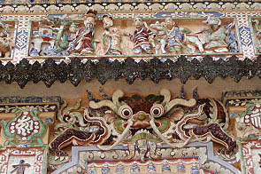
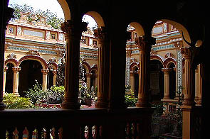
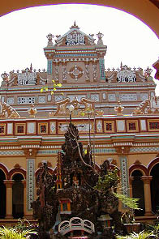
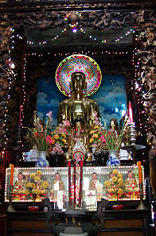
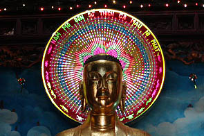
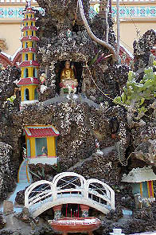
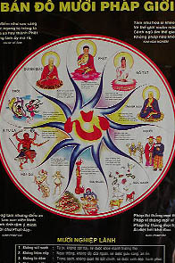
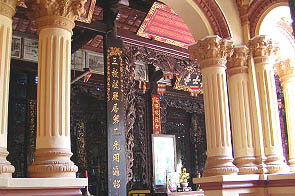

ChuaVinhTrang/TienGiang,MyTho
ヴィンチャン寺（永長寺）/ミトー
ミトーの郊外にある仏教寺院。

しかしその外見はどこをどー見ても洋風建築である。
何故こんな事になってしまったのか、一体この建物のどこに仏陀がいるのだろうか。閻魔大王は似合わないぞ。寝釈迦が猫足のソファーとかで寝てたらどうしよう・・・
庭なんかもキャンディ☆キャンディが走っていそうなとこである。
そう、ここはまさに少女漫画に出てきそうな想像上の異国の世界、しかし良く見ればその実体は「どこにもない」建築様式。
このどこかにありそうで実はどこにもない様式、それがベトナム建築の特徴なのだ。
インドやミャンマーの一部の建物にもいえるのだが西洋の様式と自国（もしくはその地域）の様式が融合した時、どこかにありそうでしかしどこの様式と見分けにくい美術史や建築史の狭間のような独自の様式が誕生する。
日本の明治初期の擬洋風建築、メキシコやフィリピンの教会などなど、そんな異文化とのぶつかり合いが産んだ（コトバは悪いが）混血様式の一種と考えられる。
これはベトナムの不可解な宗教事情と歴史の賜物なのだろうか。
この寺院は1849年に建設され、1907年に改築されている。現在のかたちになったのはその改築時らしい。
 
左右対になっている山門はベトナム風としかいいようのない摩訶不思議なデザイン。全体的な意匠は中華風だが所々ヨーロッパ建築の影響が。
陶器とタイルモザイクとセメント彫刻が織り成す渾然一体模様。
 
正面から見ると平等院のような左右にウイングを持つ建物だが内部には中央に四角い中庭を持ち、大きく分けて中庭より手前と奥の2つの部分に別れる。
手前には中央に阿弥陀仏を祀った拝殿がある。内部はきっちり中華風。訪れた人々はここで線香をあげて参拝する。
 
ここにも渦巻くようなパターンのうっとりするような素晴らしい電飾光背。一体どこに売っているのだろう。
電飾光背に関しては財布の紐は全開なのに、売りに来るのは線香やジュースや宝くじばかり也。
 
中庭には例の巨大盆石が。ここも橋やパゴダや仏像などを置いて箱庭感を高めてます。
十獄図を発見。良い図案である。これもまた欲しい。

中庭自体はかなりフランソワーな雰囲気に包まれているが中庭の奥の部分に入ると様相は一変する。
突然ベッタベタの中国建築風の透かし彫りの嵐となる。
その先には位牌堂や仏像がある、いわゆる本殿のようなところ。十八羅漢もいました。
中庭に照りつける陽光と建物の中の薄暗さが東西の建築様式のギャップを象徴しているかのようなコントラストを形成していた。
和魂洋才というコトバはあるがまさに越魂洋才の権化のような寺であった。
ってゆうか中と外が全然噛み合ってないんですけど。
次へいきましょう
越南珍寺劇場
珍寺大道場 HOME